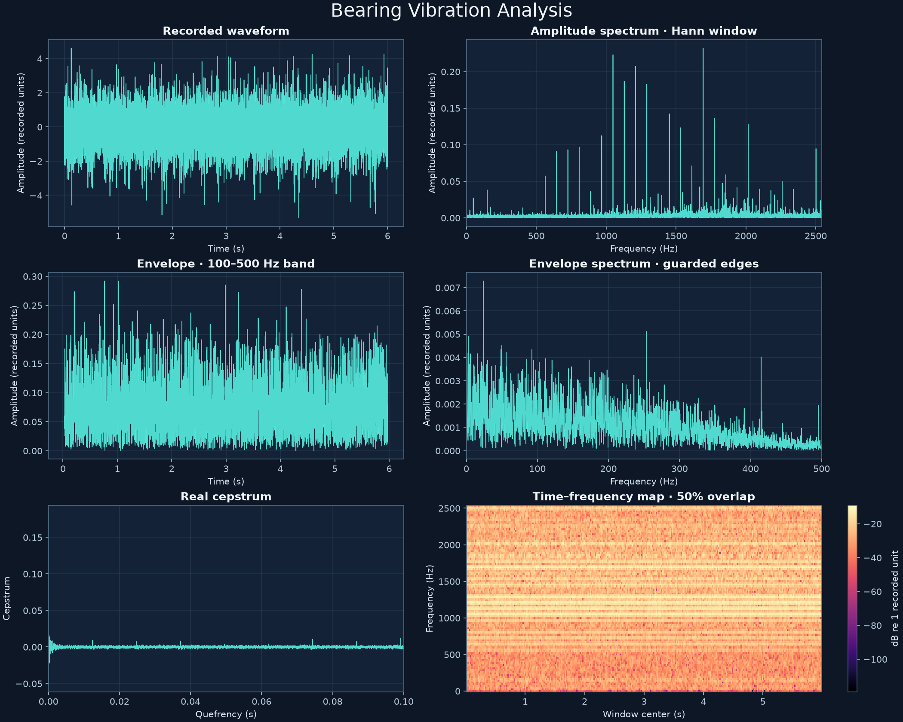
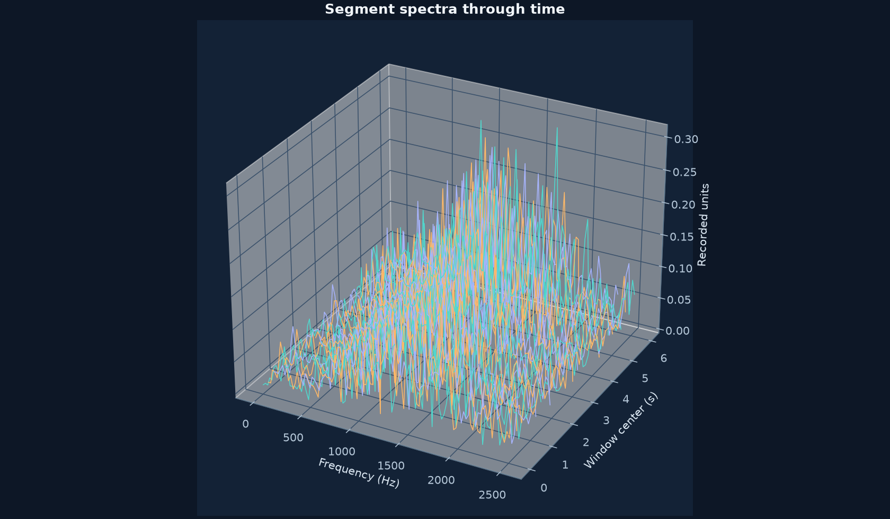

One recording, one project.
The input outerfaultdata.txt appears in Vip_Analysis + Waterfall. SHA-256 comparison confirmed identical copies; these analyses are grouped in one project and the repository stores one canonical recording. The press and bearing recordings have different contents, so each receives its own repository even though their analysis methods overlap.
Input: outerfaultdata.txt
Identity:
cb4c92c5b527bd349f414979a3e5f1789d85af57f35db8f705a6245b55b2a7c6Timestamps are finite and strictly increasing. Maximum interval deviation from the mean spacing is 0.585679%; the loader accepts up to 1% to accommodate decimal rounding.
A repeatable analysis workflow.
Load and validate the recording, derive the clock from sample intervals, compute each analysis, then export plots and numerical tables from the same run.
| View | Method |
|---|---|
| Waveform and statistics | Use all samples for mean, true RMS, AC RMS, crest factor, Pearson kurtosis and peak-to-peak range. |
| Amplitude spectrum | Mean removal, Hann window, coherent-gain correction and frequency bins derived from the complete transform length. |
| Real cepstrum | Inverse real FFT of log magnitude with a finite floor. Quefrency reveals repetition structure; it is not a direct fault label. |
| Envelope and spectrum | Fourth-order Butterworth bandpass in second-order sections, forward/backward filtering, Hilbert magnitude and edge exclusion before the envelope FFT. |
| Waterfall and time–frequency map | Recompute each Hann-windowed segment with 50% overlap. Plot coherent-gain-corrected amplitude; the heatmap uses dB relative to one recorded unit. |
What changed from the source scripts
The original helpers treated standard deviation as RMS, used an incorrect peak-to-peak expression for same-sign data, and reused one envelope-spectrum segment. The maintained runner separates RMS from AC RMS, corrects range and FFT normalization, validates timing, and recomputes each time window. It also replaces incomplete interactive waterfall calls with a repeatable analysis of the same input.
Results from the supplied data.
The strongest non-DC X-channel bin is 1,694.333 Hz. True RMS is 0.9926 and peak-to-peak is 11.7363, both in recorded units. The default-band envelope spectrum peaks at 23.906 Hz. The time–frequency analysis uses 285 overlapping windows, with 23.842 Hz bin spacing.


Check the methods against known answers.
All 13 numerical checks passed for the maintained runner. Coverage includes known-amplitude sine waves, DC and Nyquist handling, odd-length transforms, RMS and range, zero-signal statistics, envelope modulation recovery, opposite signed rotations, changing frequencies across waterfall windows, offset retention, BOM input and invalid data rejection.
The supplied dataset also completed an end-to-end run. Source-file hashes, generated results and the test transcript are retained in the independent project repository. These checks establish the tested numerical behavior; they do not establish a machine fault diagnosis.
Reproducible outputs
The Python project includes its recording, preserved originals, dependency versions, a Windows launcher, tests, CSV exports and a JSON run summary. This portfolio contains the report and selected figures only.
Keep interpretation tied to the evidence.
Amplitude calibration, confirmed machine metadata and bearing geometry are not supplied. All amplitudes are in recorded units. The 100–500 Hz envelope band is inherited from the original scripts and remains an exploratory choice. A spectral peak, an elevated crest factor or the name outerfaultdata.txt alone does not establish a bearing fault. Waterfall windows trade frequency resolution for time resolution; their bin spacing differs from the full-record FFT.
Methods follow the documented NumPy FFT conventions and SciPy analytic-signal definition.